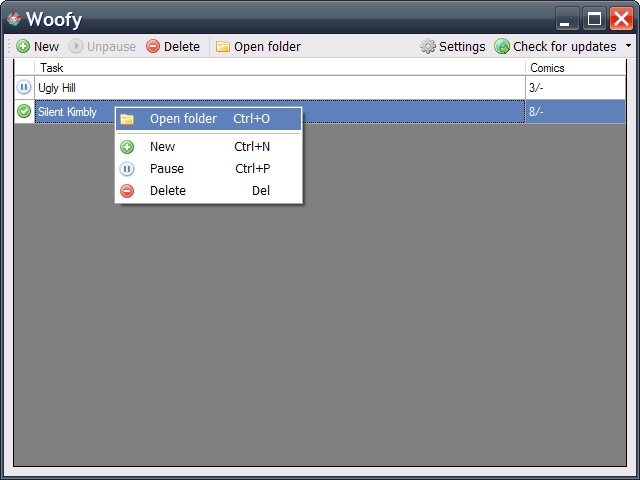
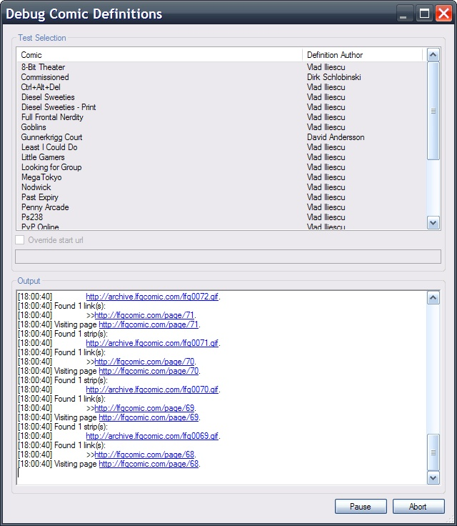

-
Adding a new task is a breeze, as you only have to select the comic to download and the download mode (the download folder is set automatically, based on your preferences).

-
In the main window, you can see a list of the current tasks. Note that the finished tasks will not be remembered when Woofy is restarted, in order to avoid cluttering the tasks list.

-
If you prefer using context menus to toolbars and shortcut keys, Woofy has just that.
 -
For the hardcore users that want to create their own definitions, Woofy provides a definitions debugger, displaying the steps taken while downloading a comic.

Logistix theme, designed by Free CSS Templates